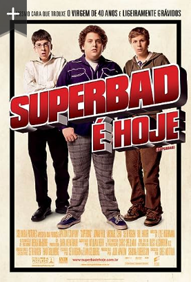

SUPERBAD
SINOPSE
Seth (Jonah Hill) e Evan (Michael Cera) só querem sair com as garotas que gostam antes de ingressar na faculdade. Mas, para isso acontecer, eles precisam conseguir bebidas para a grande festa daquela noite. Com a ajuda do amigo Fogell, também conhecido como McLovin (Christopher Mintz-Plasse) e sua carteira de identidade falsa, os três partem em busca das bebidas despistando policiais incompetentes (Seth Rogen e Bill Hader) tentando reverter uma vida inteira de monotonia em apenas uma noite de diversão.